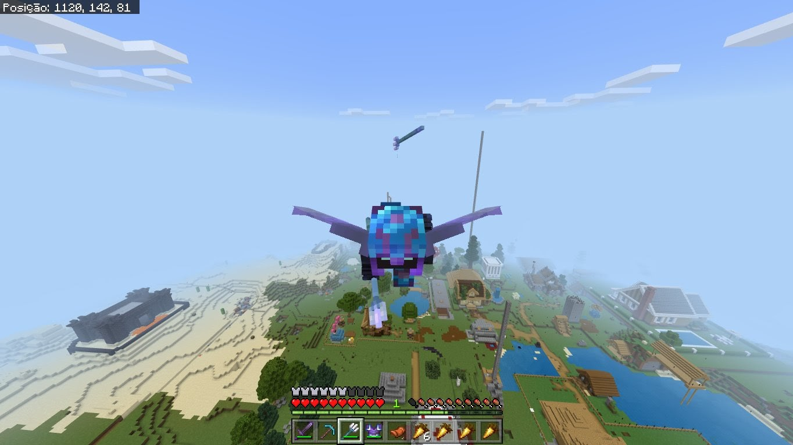

Dia 28/06/23
Matemática 2(Programação)
Imagem de eu sendo seguido por um tridente:

Como fazer isso?
- Encante um tridente com "Lealdade III";
- Preencha o inventário com itens;
- Ao lançar o tridente, abrirá um espaço a mais no inventário, entao jogue algum item no chão para pegar depois;
- Depois, é só sair andando por aí que o tridente vai te seguir... Assim que voce liberar um espaço no inventário, o tridente voltará.